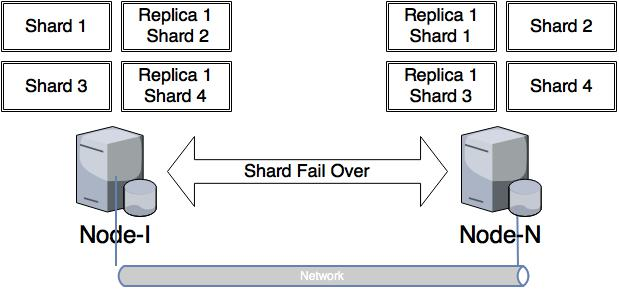

Course Overview
Overview
Chapter 1: Introduction
Introduction
Terminology
Terminology Cont'd
CAP Theorem
CAP Theorem and Beyond
Data Modeling
Data Examples
Data Examples - App Side Joins
Data Examples - Parent-Child
Exercise Setup
One Node Setup Exercise
Distributed Database
Cluster, Shards, and Replicas
Indices and Aliases
Summary
Chapter 2: ElasticSearch Index
Introduction
Index
Type
Index and Type Api
Transaction Log and Lucene Index
Index Configuration
Index Settings
Mapping
Mapping Exercise
Not Analyzed & Multi-Fields
Not Analyzed & Multi-Fields Exercise
Summary
Chapter 3: Search
Introduction
Query Dsl
Query Dsl Cont'd
Query Dsl Leaf Clause
Query Dsl Term
Query Dsl Terms
Query Dsl Range
Query Dsl Compound Clause
Query Pagination
Query Uri
Aggregation
Query Exercise
Highlighting
Filter
Filter Example
Filter Exercise
Summary
Chapter 4: Advanced Search and Mapping
Introduction
Terms Aggregation
Nested Aggregation Query
Nested Aggregation Results
Date Histogram Aggregation
Range Aggregation
Nested Datatype
Nested Datatype Mapping
Nested Datatype Query
Aggregation Exercise
Parent-Child Relationship
Chapter 5: Kibana 4
Introduction
Setup
Setup Exercise
Extras
Nested Aggregations
Published with GitBook
Distributed Database
Distributed Database

results matching "
"
No results matching "
"